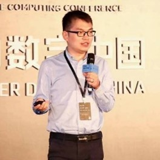

| Peng Liu | |
|---|---|
| Peng Liu, received his BS and MS degrees from the University of Science and Technology of China, and his PhD from George Mason University in 1999. Dr. Liu is a Professor of Information Sciences and Technology, founding Director of the Center for Cyber-Security, Information Privacy, and Trust, and founding Director of the Cyber Security Lab at Penn State University. His research interests are in many areas of computer security. He has published a monograph and over 270 refereed technical papers. His research has been sponsored by NSF, ARO, AFOSR, DARPA, DHS, DOE, AFRL, NSA, TTC, CISCO, and HP. He has served as a program (co-)chair or general (co-)chair for over 10 international conferences (e.g., Asia CCS 2010, CNS 2018) and workshops (e.g., ACM MTD 2016). He chaired the Steering Committee of SecureComm during 2008-14. He has served on over 100 program committees and reviewed papers for numerous journals. He is an associate editor for IEEE TDSC. He is a recipient of the DOE Early Career Principle Investigator Award. He has co-led the effort to make Penn State a NSA-certified National Center of Excellence in Information Assurance Education and Research. He has advised or co-advised over 34 PhD dissertations to completion. | |
| Title: Al for Cybersecurity: Current Status and the Role of GPT—4 Abstract | |
| Abstract: In this talk, I will firstly briefly summarize the past 30 years of academic research in systems security. The summary is anchored by a few “broken heart” findings, which partially motivate the applications of Al/ML technologies. Second, I will review the current status of Al for cybersecurity. Finally, I will discuss why LLMs such as GPT-4 are likely the biggest X factor in the field of cybersecurity. | |
| Bo Luo | - | |
|---|---|---|

|
Bo Luo is a professor with the EECS department at the University of Kansas.He is the director of the Center for High Assurance and Secure Systems (HASS) atKU's Institute of Information Sciences (I2S). He received Ph.D. degree from ThePennsylvania State University in 2008,M.Phil degree from the Chinese Universityof Hong Kong in 2003, and B.E. from University of Sciences and Technology ofChina in 2001. His recent works mostly lie in the intersection of data science andprivacy and security. Dr. Luo has published 90+ refereed papers, including onesin top conferences and journals such as IEEE S&P,ACM CCS,USENIX SecurityNDSS. ACM Multimedia, IEEE TKDE.IEEE TIFS.IEEE TDSC,VLDBI,etc.Hereceived the KU EECS Excellence in Undergraduate Teaching Professorship in2023, the Miller Scholar award of University of Kansas in 2016. 2017, and 2021and the Miller Professional Development Award in 2015. He is also the recipientof ACSAC 2017 and ACSAC 2021 best paper awards, and CCS 2022 best paperhonorable mention. | |
| Title: Machine Learning and Cybersecurity: a Tale of Two Buzzwords | ||
| Abstract: Recent developments in machine learning has transformed many dataanalytic applications, such as speech recognition, computer vision, and naturallanguage processing. ML also made its impact to the security and privacycommunity, for instance, in network intrusion detection, malware detection, andmalicious behavior analysis. Meanwhile, a broad spectrum of cyber-attacksagainst machine learning systems has been proposed. Such attacks aim to breakthe integrity or confidentiality of the models. In this talk, I will introduce severalresearch projects from KU’s InfoSec group on adversarial/trustworthy machinelearning. Through this talk, we hope to highlight the security and privacy issuesin AI/ML systems, which may be helpful for the audience to identify theopportunities and challenges in their own research fields. | ||
| 陈恺 | |
|---|---|
| 陈恺, 中国科学院信息工程研究所研究员，中国科学院大学教授/博士生导师。入选国家级领军人才，国家自然科学基金重大研究计划项目负责人，信息安全国家重点实验室副主任，《信息安全学报》编辑部主任。主要研究领域包括系统安全、人工智能安全。在IEEE S&P、USENIX Security、ACM CCS、NDSS、ICSE、ASE等发表论文100余篇。担任S&P、USENIX Security、CCS等A类会议程序委员会成员。获中国科学院青年科学家奖、CCF-IEEE CS青年科学家奖、北京市“杰出青年”基金、北京市智源青年科学家、NASAC青年软件创新奖、CCF杰出演讲者、中国科学院青年创新促进会（优秀会员）等。 | |
| Title: 智能模型安全对抗防御与解释 | |
| Abstract: 近年来出现的人工智能技术对攻防对抗产生了重要影响。尤其是其自身的安全问题，如对抗样本、神经网络后门等，时刻威胁着自动驾驶、面部识别支付等多种应用。这次报告将重点介绍人工智能模型对抗防御、以及解释方法的忠诚性等问题。 | |
| 陈艳姣 | |
|---|---|
| 陈艳姣 , 浙江大学百人计划研究员、博士生导师。2015年博士毕业于香港科技大学计算机科学与工程系，曾担任多伦多大学博士后研究员、武汉大学研究员、博士生导师。在网络和安全等领域的国际权威期刊和会议上发表论文100余篇，担任ACM CCS、NDSS、USENIX Security等国际会议TPC member和IEEE Wireless Communications Letters等国际期刊编委。入选“中国科协青年人才托举工程”。获香港科学会青年科学家荣誉奖等。 | |
| Title: 基于注意力自蒸馏的深度学习模型后门防御技术 | |
| Abstract: 深度学习模型被广泛应用于人脸识别、自动驾驶等重要领域。 然而，最近研究表明，深层神经网络容易受到隐蔽的后门攻击。深度学习模型的后门不影响干净输入的正确识别，但在特定激活器触发下可以实现定向识别出错。本报告，我们将介绍一种利用注意力自蒸馏的深度学习模型后门防御技术，利用不易受后门影响的模型浅层来进行层间注意力纠正。与现有方法相比，该防御技术在触发器未知的条件下，对多种后门模式均可实现有效的后门清除。 | |
| 王鹃 | - | |
|---|---|---|

|
王鹃,武汉大学国家网络安全学院教授，博士生导师。信息安全系系主任、教育部空天信息安全与可信计算重点实验室研究人员。2008年获武汉大学计算机学院首届信息安全专业博士学位。2017-2018美国宾夕法尼亚州立大学访问研究学者、2009-2010年美国亚利桑那州立大学(ArizonaStateUniversity)IraA.Fulton工程院信息安全中心访问学者。主持国家自然基金面上和青年项目，作为骨干参与国家973、863项目，并主持华为、浪潮等多项企业创新项目。授权国家发明专利15项，国际专利1项，软件著作权2项；在CCFA类会议和期刊NIPS、CCS、TDSC、TCAD及TCC、TSMC、计算机学报、软件学报、电子学报等期刊上发表论文60余篇；获得湖北省科技进步一等奖1项、二等奖1项；担任CCF计算机安全专委会委员、电子学会信息安全专委会委员，中国可信云社区秘书长，也是TIFS、TDSC、TCC、IoTJoural、计算机学报等期刊和会议的审稿人。 | |
| Title: 《拆分学习攻防》 | ||
| Abstract: 拆分学习和拆分推理通过将深度学习模型划分为不同参与方之间的连续模型参数层，实现分布式训练和预测。在协议中，通常包括一组客户端和一个服务器。客户端旨在通过安全地组合他们私有的数据集来训练共享的深度学习模型；服务器管理这个过程并承担大部分所需的计算成本。当模型训练完毕后，不同参与方基于该模型执行分布式模型预测任务。拆分学习和拆分推理作为一类新兴的协作式机器学习范式，能够更好地权衡客户端设备的计算负担和敏感数据的隐私泄露风险。然而，现有研究表明，仅依赖客户端上传的模型中间层输出特征，恶意的服务器仍可以发起成员推理、属性推理、数据重构等攻击，这对客户端的私有数据造成了严重的隐私威胁。由此催生了一系列防御机制，通过对中间层输出特征进行混淆，提供了模型效用性和数据隐私性的权衡。 | ||
| Kangjie Lu | |
|---|---|
| Kangjie Lu, Dr. Kangjie Lu is an associate professor in the Computer Science & Engineering Department of the University of Minnesota-Twin Cities. His research interests include security and privacy, software engineering, operating systems, and security ethics. He is particularly interested in developing both principled approaches that address fundamental security problems and practical techniques that secure real-world systems. His research also frequently intersects with other fields such as machine learning and NLP, programming languages, compilers, architecture, and formal methods. His research results are regularly published at top-tier venues and have led to many important security updates in widely used software systems such as the Linux kernel, the Android OS, the FreeBSD kernel, Apple’s iOS, OpenSSL, PHP, etc. He is a recipient of the NSF CAREER award 2021 and won the best paper award at ACM CCS 2019 and a distinguished paper award at ACSAC 2022. He received his Ph.D. in Computer Science from the Georgia Institute of Technology in 2017. | |
| Title: Program Modularization | |
| Abstract: Today's software programs are bloating and have become extremely complex. As there is typically no internal isolation among modules in a program, a vulnerability can be exploited to corrupt the memory and take control of the whole program. Program modularization is thus a promising security mechanism that splits a complex program into smaller modules, so that memory-access instructions can be constrained from corrupting irrelevant modules. However, existing approaches use data-flow analysis to determine dependences, which is impractical. In this talk, I will share novel and practical techniques for program modularization, including type-based dependence analysis and the enforcement of least-permission memory regions. These techniques can be applied to both large programs and small devices with limited hardware support. | |
| 洪澄 | |
|---|---|
|  | 洪澄, 蚂蚁技术研究院研究员，中国科学技术大学学士，中国科学院大学信息安全博士。他的研究兴趣包括数据安全与隐私保护、应用密码学等，曾在EUROCRYPT、KDD、S&P、SIGMOD、USENIX'Sec、VLDB等顶级会议发表相关论文数十篇。他先后在阿里巴巴和蚂蚁集团从事安全多方计算、同态加密、机密计算、差分隐私等前沿技术的研究与应用，研发的技术已被用于保护数千万消费者的数据安全。 |
| Title: 松鼠-保护隐私的梯度提升树（GBDT）技术 | |
| Abstract: 梯度提升树GBDT（及其变种XGBoost、LightGBM等）是工业中极其常用的模型，被频繁用于风控、推荐等场合。在隐私计算中，常常遇到这一类场景：两个或多个厂商希望基于双方的数据集，联合训练GBDT。当前对此的解决方案可分为两类：联邦学习（FL）类方案，如SecureBoost，性能较好，但是会泄露梯度和分支信息；安全多方计算（MPC）类方案，如Pivot、HEP-XGB等，具备可证明安全性，除了最终的模型之外无任何信息泄露，但是性能较低，训练耗时远高于Secureboost等方案。能否实现两全其美的方案，既具备MPC方案的安全性，又具有较高的性能？本文给出了确定的答复：我们的“松鼠”系统设计了多个基于同态加密、OT等技术的密码学创新，最终可以在分钟级完成百万行数十列的联合GBDT训练，已经被USENIX'Security 2023接收，即将在蚂蚁“隐语”系统中开源。 | |
| Jun Xu | - | |
|---|---|---|
| Jun Xu, Dr.Jun Xu is an Assistant Professor in the Kahlert School of Computing at The University of Utah. Before joining Utah, he worked as an Assistant Professor at Stevens Institute of Technology, after receiving his Ph.D. from Penn State University in 2018. Jun's research focuses on software security and system security. His research has led to many papers published in top-tier computer security conferences, including IEEE S&P, ACM CCS, USENIX Security, and NDSS. Jun has been funded by NSF, ONR, and several industry organizations. He is a recipient of CCS Outstanding Paper Award, SecureComm Best Paper Award, Penn State Alumni Dissertation Award, and RSAC Security Scholarship. | ||
| Title: Exploring Balance between Performance and Security of System Programming Languages | ||
| Abstract: Classic system programming languages, such as C and C++, are designed with efficiency as their top priority. This leads to reduced security guarantees (e.g., no memory safety) and raises broad concerns. In the first part, I will present our efforts toward a better efficiency-security balance of C by introducing highly optimized sanitization to eliminate memory safety issues. More recently, Rust emerged and is believed to be a game changer for systems programming. Rust comes with enforcement of various security properties (memory safe, type safe, and thread safe) and claims to be C-level fast. In the second part, I will present our study of understanding the efficiency of Rust, considering C as the baseline. A good efficiency-security balance is certainly nice to have, but is it possible to achieve perfection in both aspects of modern system programming languages? In the last part, I'll talk about our ongoing effort to explore that question. | ||
| Kaitai Liang | |
|---|---|
| Kaitai Liang, is a tenured faculty member of the Cybersecurity group at Delft University of Technology. He received his PhD degree in computer science at City University of Hong Kong. With over 10 years experiences on cybersecurity R&D, his main focus is on the design and implementation of cryptographic protocols to security. He has led as a PI in several European funded projects, e.g., TANGO, ASSURED, IRIS, and delivered real-world impact via these projects with academic and industrial partners. He has also maintained a tight and strong research relationships with Europe, Asia-pacific and northern America academic communities. He has published a series of research works (> 120 publications, > 4,500 citations), applying information security and crypto tools to address cybersecurity challenges. These publications have appeared in high-tier international information security journals and A* conferences, e.g., USENIX Security, NDSS, ESORICS (where he was honored with the Best Research Paper Award in 2015), IEEE TIFS, and IEEE TDSC. Beyond his research contributions, Dr. Liang has played an active role in the academic community. He has served as a Technical Program Committee (TPC) member, General Chair, and Steering Committee member for over 25 renowned international security and privacy conferences, including IEEE Euro S&P, ESORICS, IEEE CSF, and PoPETs. Furthermore, he has made valuable contributions to ISO standards as a member of the standards committee 381027 "Cybersecurity & Privacy" at NEN. In addition to his academic pursuits, Dr. Liang serves as an Associate Editor for esteemed journals such as the Computer Journal, IEEE Systems Journal, IEEE Transactions on Artificial Intelligence, and the EURASIP Journal on Information Security. Furthermore, he acts as a cybersecurity consultant for SMEs, sharing his expertise and guidance in the field. | |
| Title: Searchable Symmetric Encryption and its attacks | |
| Abstract: Searchable Symmetric Encryption (SSE) is a technique that allows users to delegate keyword searches over encrypted databases to a server that may be honest but curious, while preserving the privacy of the keywords and the encrypted documents. In this presentation, we will begin by introducing the concepts, mechanisms, and security notions related to SSE. We will then discuss current attacks onSSE and highlight some of the open problems in this area. | |
| 陈平 | - | |
|---|---|---|
| 陈平博士主要研究漏洞挖掘和拟态防御，主要成果发表在国际顶级会议和期刊CCS，USENIX Security,Automatica,TIFS和TDSC上，至今总他引用1000余次。至今陈平博士拥有国际论文30余篇，中美专利共12项，著书3本。他主持或作为主要成员参与18个国内外国家级和省级的项目。曾获上海市领军人才，微软学者等称号。 | ||
| Title: 智能网联汽车漏洞检测和定位技术及其应用 | ||
| Abstract: 随着智能网联系统和软件供应链发展，二进制漏洞挖掘需求越来越强烈。然而，几十年来，漏洞挖掘面临着二进制逆向不准确，漏洞挖掘效率不高，漏洞定位无法自动化等问题。复旦大学内生安全团队将从近期团队发表在ICSE，USENIX Security，CCS等安全会议上的科研成果出发，介绍在智能车漏洞检测和定位方面的最新研究进展，并介绍他们将这些研究成果应用在智能车固件漏洞挖掘方面的一些实践。 | ||
| 管运国 | - | |
|---|---|---|
| 管运国于2023年从加拿大新不伦瑞克大学（University of New Brunswick）计算机科学系获得博士学位。自2023年以来，他担任美国东密歇根大学（Eastern Michigan University）信息安全与应用计算学院的助理教授。他的研究兴趣包括应用密码学和博弈论。 | ||
| Title: Achieving Efficient and Privacy-Preserving (α,β)-Core Query over Bipartite Graphs in Cloud | ||
| Abstract: Bipartite graphs have been widely adopted in applications such as e-healthcare and recommendation systems thanks to their ability to model various real-world relationships. Meanwhile, (α, β)-core query services over bipartite graphs are generally recognized as a promising approach for finding communities, i.e., sets of closely related vertices, in a bipartite graph. As the bipartite graph grows, the service providers tend to outsource the services to the cloud for flexible and highly reliable computational resources. However, since the cloud is not fully trustable, there are privacy concerns related to the dataset, query requests, and results. Although many schemes have been proposed for privacy-preserving queries over graphs, they cannot be directly adopted to handle accurate (α, β)-core queries over bipartite graphs. Aiming at the challenges, under the two-server setting, this paper constructs two privacy-preserving schemes with different levels of security to handle (α, β)-core queries over the bipartite graph. Specifically, in the proposed schemes, a graph is represented as an index containing an edge table and a node table and further encrypted by a symmetric homomorphic encryption scheme, and then the two servers securely traverse the index. Detailed security analysis shows that both schemes can achieve access pattern privacy, while the security-enhanced one can further protect the structure privacy of the query requests and results. In addition, extensive performance evaluations are conducted, and the results also indicate our proposed schemes are computationally efficient. | ||